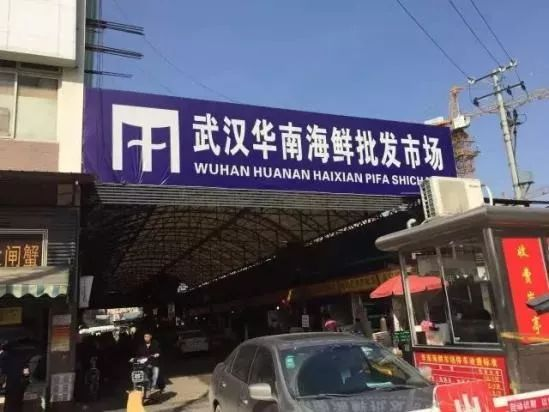
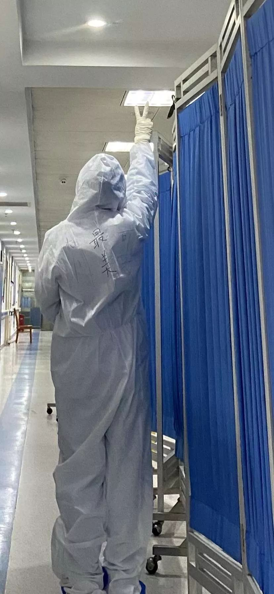
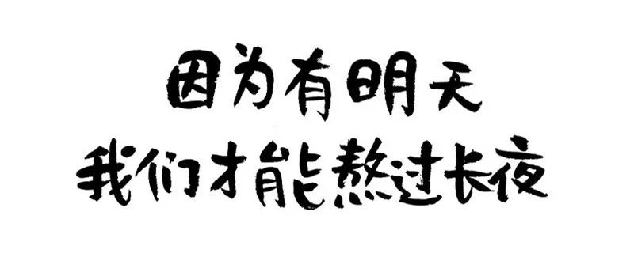

「临时抗疫」第7天，我开出了第一张死亡证明
原文链接 备份链接 蔡毅医生是武汉市中心医院的疼痛科主任，主攻微创治疗颈椎腰肩痛，从1月28日开始，他主动申请到抗疫一线，成为一名临时的「抗疫医生」。 他管理的是武汉市中心医院的发热二区病房，在这里，不到10天的时间里，他经历了患者的离 …
医学史
记录你的行医故事

按
本文根据武汉某三甲医院呼吸内科住院医师牛牛妈口述整理。牛牛妈所在的医院虽然不是新冠病毒肺炎的定点收治医院，但从去年年底至今，呼吸内科从最初大的一个病区扩展到四个病区，一直超载运行。有的人是自己走进来的，离开的时候都没来得及见家人最后一面；有的人对这个世界充满热情和眷念，在生命最后几分钟还在视频……每一个故事，都让人满含泪水，每一个生命，都值得我们铭记。从绝望到希望，那些和牛牛妈插肩而过的生命，是此刻最真实的人世间。
一
今时今日，疫情发源地“华南海鲜市场”已经是无人不知无人不晓的存在。就说我本人，其实也收治过跟华南海鲜市场有关的新冠病毒肺炎患者。
病人是位40多岁的中年女性，首先是她老公到华南海鲜市场买了一袋螃蟹，买螃蟹的过程中，他在市场里还转了一圈，可以说走了很长时间吧，年前采办年货嘛，在里面挑挑拣拣啥的。回来之后，她老公没有任何症状，也没有发病。
但是，这位家庭主妇接手了这袋螃蟹之后就开始发烧了，而且病情越来越重。
门诊做了CT，我和同事根据影像特征判断她高度疑似新冠病毒肺炎，就这样收到了我所在的病区。ps，她是我最初接诊的4个重症感染患者之一。

我当时就觉得疑窦重重——这个患者没有去过华南海鲜市场，她是怎么被感染上的呢？而她老公虽然去过华南，但却并没有感染……然后我就想到，不一定是一定要到华南海鲜市场才会染病，有可能接触会传染。她老公可能就是那种免疫力很强的人，就没有发病，但是他把病毒携带回家，传给了他老婆。
那是在什么时候呢？才1月10号左右！官方的渠道还在强调没有证据证明病毒会人传人，所以我们只是对患者本人采取了隔离和治疗措施，没有特别地让她老公去隔离啥的。
说回这个病人，因为比较年轻，体质还可以，没有什么基础病，平常都在家做体力活的，加上心态比较放松，所以她在治疗过程中病情进展较慢，治疗效果也比较好。第一次核酸检测阴性，第二次检测呈阳性。既然确诊了，所以成功地转到了金银潭医院。
整个过程中，她老公一直关注华南海鲜的信息，特别地焦虑。他老在问我为什么他老婆得病他不会得病，他自己为什么还没得病啥的，天天问这个为什么。我也就一直跟他保持着沟通交流。所以我也知道他到现在为止也是一直没发病。
我相信，如果他发病，他第一时间会给我打电话，因为他有我的手机号的。
二
再来讲一个广场舞大妈。
大妈其实就住医院隔壁小区，我还记得她当时来的时候是自己走过来的，症状不算很严重的那种，氧饱和度身体体征都稳定，唯一不太好的就是她的胸部CT。
CT出来显示全肺累及，但还不是白肺，而是那种很淡的云雾状的磨玻璃影。我当时很重视这个病例，因为这个疾病的特点就是症状跟体征的不一致。
我第一时间跟她谈病重，给她把监护都上上去，可她还是觉得自己有点闷，有点憋。可能是对这个疾病的认识度非常有限，大妈每天几乎24小时不停地玩手机。怎么说呢，就是跟家人视频啊，跟自己广场舞的舞伴儿们聊天，干这些事儿。
我因为了解这个疾病，我就在她住院的第三天，赶紧安排复查了个CT。妈呀！这一复查，肺基本上全白了。当时我看监护仪她的氧饱和度能够坚持到最高93左右，但是一动就会掉下去，所以我就赶紧跟她家人打电话告病危，然后她的老伴来了。

老头来了就说你们尽一切可能地救她吧，她一辈子从来没住过院，她刚刚还在外面跳广场舞，结果就这样发烧就得病。我们都觉得不可能，她怎么这么好的体质都会得病，不太接受这个现实。
她唯一的女儿在境外，当时办不了签证回不了武汉，天天听我们跟她电话沟通病情。我跟家属说要做好心理准备，这个病进展会非常快，很多病人能扛过来，很多病人不明原因的就会突然加重，该用的药我们都会去用，该做的抢救我们都会去做，但有时候就是没办法。
大概是在住院第4天吧，大妈的氧饱和度急剧下降，我就安抚说你不要整天拿手机跟家人跟朋友视频聊天了，这会耗氧。但是她不听，感觉大妈是那种特别热心，也特别特别需要周围人关注的那种性格，不管什么事情，她都会想着跟身边联系的好友通知一声。
从住进来开始大妈就不要听医生，依从性很差。导尿管上完之后，几分钟她就拔掉，受不了任何的痛苦。让她吃东西，喝水干啥她不愿意，她要视频聊天，要把该说的话都说完。她的老公跟我说她平时也是，碰到事情自己焦虑，然后把家人也搞焦虑。我很理解她，本来病也很重，从来没得过病的人肯定是很恐慌的。但是我跟她用的抗焦虑治疗也完全无效。
住院第5天，大妈的血氧饱和度垮到了50，一天之内就从大概80几掉到了50。我觉得情况很不妙，我就跟她家人通通打电话，告病危。这个病人一直到最后抢救，我都是从头到尾站在她旁边的。
在生命最后的那几分钟，大妈还在视频，还在视频。
我记得她是下午两点钟走的，之前她还在和她老公视频，监护仪上所有的指标都不好，血压往下掉，心率也在往下掉。我就知道她已经到了最后的阶段，也就是上海中山医院重症医学科副主任钟鸣说的”炎症因子风暴“阶段，之后马上就是多脏衰。可是我没有任何办法干预啊，等她大概视频完，没过多长时间，手机从手中啪地坠到地上，大妈就这样在我面前，走了。
那种绝望和无助，深深地打击着我，病人走了，我失声痛哭……
我只记得那时候钟南山院士还没到武汉，那时候，整个世界还在一片祥和，很多同事还在“裸奔”。
三
一个大学的教授，来的时候显得特别焦虑。
因为感染很重，就是那种两个肺都已经几乎全白的那种，然后血氧饱和度只能维持在刚刚90。
我很重视他，我第一时间跟他的家属全部都沟通病情，他的两个儿子都跟我见了面。
然后我说，你们家尽一切条件救救他吧，他的预后很不好，我们医生会尽力，你们家属也要配合，大概就是这样子。能够住进来都很难，两个儿子都很感谢。我直接就跟他们说实话：做好心理准备，钱啊什么的都不需要，这个时候你们需要的是配合医生。
可是这个病人住进来之后，从头到尾都很焦虑。他每天说话很吃力，但还是写纸条跟我们交流。感谢我们医护人员，你们一定要救我，我现在很难受……我和同事每天安抚他，全力干预和缓解他的焦虑情绪。我就说你配合，我们一定会挺过来，这个病你自己也要有战胜它的意志力。我们有成功治好的例子，比你的病还要重。但这个病人表面淡定，内心恐惧，他每天的监测心率都在100左右，我们凭医生的直觉就觉得这个人情绪方面的因素太重了。
这个爹爹他其实没啥基础性疾病，但是进展实在太快。我跟他家属联系，两个儿子都来不了，说是也被感染了，给其它的医院收治了，只能电话和微信联系。但是要买什么药都很配合，包括营养品啊什么的，都是通过熟人和朋友送到医院来。
这个病人很快就出现了ARDS也就是呼吸窘迫，然后到死的时候人还是清醒的。最后几分钟就是活活憋死过去的，我们也用了很多的抢救设备，还是没有抢救过来。
下班的时候，我和同事抱头痛哭。
面对新冠这种病魔，无论你是教授还是广场舞大妈，都是一样的无力。
四
一位50出头的中年女性，入院情况就不太好——CT显示肺部的病变面积特别大，有高血压，然后还有慢性肾功能不全。
氧饱和度也不稳定，只有80几到90，刚刚及格线。
我当时就觉得这个病人可能救不过来，然后我就联系她的家人。了解下来她的家人全部中招，都在各大医院住院，唯一的女儿怀孕了，还远在重庆。
那个时候武汉已经交通封锁，也不能回来，然后我就对这个病人不抱太大希望，心里想着这个病那么重，家人又不在身边，可能预后特别差。
没想到，她身在重庆的女儿在跟我电话沟通病情的过程中，深深地打动了我。她跟我说她的难处，她说我现在还一个月就生了，我肯定赶不回来，我妈妈住院，我一切都拜托您，您一定要救她。我给您下跪，我录视频给您……反正救治的意愿特别强烈。
我当时又流泪了，从那一刻开始我改变了自己的心态。
这个病人也是很奇怪，开始治疗之后病情并没有迅速恶化。我感觉她自己其实做好了治不好的那种心理准备，看淡了生死，所以她无所谓。她跟我说，你该怎么治你就怎么治我吧，反正我亲人都不在身边。我都跟他们打好招呼了，见不了面也无所谓了。但是我想着她女儿对她那么的尽心，我就还是极力地每天给她鼓劲。
在大概住院一个星期之后，核酸检测就来了，第一次是阴性，第二次的话报了阳性。结果报阳性之后她运气很好，第一批转金银潭的就有她。
当时她的血氧饱和度也能够维持90以上，这个人挺过来了，现在在金银潭那边已经处于好转期了。
她的女儿自然是非常非常地感谢我，每天跟我微信，然后也跟我发捐赠，在医疗物资最为匮乏的阶段，她给我所在的单位捐了很多口罩和防护服。
到现在，她还在日复一日的地发朋友圈募捐。
五
还有一个病人，是两个儿子一起送过来的，其中一个儿子好像也是一个什么领导之类的，穿着打扮都很官气，说话也很讲礼貌非常客气。
病人70出头，但是已经患上老年痴呆，耳朵也聋，再加上思维啊什么的都不正常。
送来的时候情况很不好，病情很重，肺部感染面积很大，又是老年人。我肯定是按照程序告病危，该积极治疗、抢救啥的都搞了。
除了疾病本身，这种老年痴呆对于我们的护理也是极大的挑战。
大家都知道，隔离病房的病人吃喝拉撒都要由护士来做，因为没有留陪的家属。也不可能让家属守在里面，怕感染。所以碰上这种病人，我们护士的护理量成倍增加——这个爹爹是个聋子，又是个老年痴呆，无法沟通，让他吃饭都是强行喂。然后这个爹爹又听不懂，又犟，干啥他都要自己搞。病那么重，他还要自己上厕所，从床上摔下来一次，最后是我和三个护士一起把他抬到床上去的。就这样折腾，每天折腾，所以他病情也得不到很好的控制。
几天下来，有位护士姐妹说她实在受不了，她要累倒了，然后我没有办法，只有打电话给家属。

我说我求求你们，你们家留一个人在病房守着您父亲。我们给你做好全程的防护，你也穿防护服进去，尽量不让你感染到。因为我们护士姐妹实在是顾不了，都已经病了一个了。
两个儿子，其中一个从家里赶过来了，赶来了以后，就一直在一个角落的凳子上坐着，在那儿发抖。然后我就问他，我说你怎么了？他说我怕，我怕自己被传染。
然后我就做他的工作，我说我都在这儿工作这么长时间了，我们没有被感染，就是因为有防护呀。没有防护，你在外面也会被别人感染了。你在这儿我们可以给你单独搞一个床，把你和你父亲隔开，就是交流方面，你们尽量配合一下：能够让爹爹听您的，因为您是他在旁边唯一的亲人。
他儿子答应了，但最后也只呆了几个小时，还是给吓跑了。
他说他不干，他坚决不干，所以这样的大难度护理还是留给了我们医生护士。
当然，这种情况我们也完全理解。在疾病面前，我们不要太去考验人性，我们可以去感慨90岁的老母亲连着5天守护64岁的儿子，但也不需要去责怪临阵脱逃的儿子。
这个病人在住院后的第十天，还是走了。没有能够挽救生命，他儿子也能接受，也表示理解。
六
1月20日,钟南山院士首次披露武汉有14名医护人员感染新型冠状病毒，后来披露的情况说这起交叉感染出现在脑神经外科，而不是在传染科。在我们医院，也有医生因为做手术被感染，他是我接诊的第一例本院职工新冠肺炎患者。
这位男同事跟我年龄差不多，高高胖胖的，我说你这么强的体质你也被感染，你是怎么感染的？他就开玩笑：射线吃多了呗，对自己的免疫还是有杀伤力的，所以我这么胖还是被感染。
然后我看了一下他的CT片，感染面积不大，就只一点点。于是我跟他说行，你就到我这儿隔离治疗，保护你家人，你搞几天我们争取把你搞好，快点出院。为了给他鼓劲，我还说你这么强悍的年轻人肯定能好，现在网上说年轻人治好的都很多的，你没问题。
同时住院的还有两个护士，都是跟他一组的，照顾同一个手术病人的两个护士，都是被同一个病人感染的。三个人同一天被我收进来。
这个不同科室的同事跟我很熟，我就跟他说你放心，你到了我们科你就安全了，我们这是最专业的。要是对我的治疗不满意，你也要跟我商量，我们一起面对疾病。他也表现出很有信心的样子，但是心里其实很害怕，因为毕竟不是搞呼吸专业的。
当时还可以有声有色地开玩笑，但是这位仁兄接下来的情况很不妙，大概在住院的第九天，第十天的样子他进展到呼吸困难。复查CT，感染面积确实增大了，然后告病危。第二天，医院内部被感染的病人越来越多，就组织全院开辟了第二个呼吸内科，专门收治本院感染医务人员，所以他就被转到了呼吸二病区，另外的医生接手了。
虽然不做主治医生了，但我一直在电脑上关注他的病情进展。呼吸困难，血氧饱和度站不住，肺部感染面积进一步扩大，转金银潭又特别困难……然后他的家人就都在网上发诉求求救命。我当时特别不能理解，三个病人同时收进来啊，他是唯一一个大胖子，居然进展最快，另外两个瘦瘦的护士症状轻多了，治疗之后都快出院了，怎么他搞成这样了？但是一看他的血象，淋巴细胞几乎接近为零了！所以他还是免疫系统太弱了，免疫系统没有跟上来。
最后，通过院方的努力，我这个同事还是成功地转到了金银潭。他后期在金银潭的重症监护室里呆了很久，我一直关注他，跟他保持联系，目前听说是已经脱下了呼吸机，处于好转期了。
七
我接诊的最年轻的一例病人，三十出头。
拿着他的CT片子，我不敢相信他肺上的感染灶会有那么多！问病史，我也不知道他是怎么得的，他自己也不知道，反正就是发烧了，CT片子出来超多的感染灶。
然后当时的媒体报道都还在说老年人发病多，有基础病的发病多一些，但是我这个病人他很年轻啊。
当时我跟他开了阿比多尔，用了以后效果还可以，马上退烧了。当时也不知道是不是别的原因，可能主要还是体质免疫力比较强吧。当时我查房很开心，我就说你有希望，你现在给了我信心，我接诊的都是老弱病残，就你是年轻人，我说你可以治好。
听到我这句话之后，他马上把他的药递给我一盒。他说，医生，你要好好的。你看我这么年轻，连我都中招，你也要注意，你天天接触我们这些病人，你也吃这个药吧，这个药的说明书上写着有预防的作用。
不知道为什么，听到这句话，我眼泪一下子就出来了。
我肯定不愿意接受了，但是他说他愿意，他说他自己快好了，吃不了那么多，他说一定要给我吃，要不然我救不了他，他希望我一直好好的，可以去救更多人。
这个病人昨天出院了，各方面指标都达到了出院标准。
八
这次的新冠病毒特别容易出现聚集性疫情，动辄就是全家”中招“，而且又迟迟得不到确诊；所以我们这些临床一线的医生一直反复呼吁，建议把CT影像特征纳入诊断标准，不要光看咽拭子试剂盒，直到最近才得到认可。
接下来我想讲的是一位闺蜜同事，一位本院的消化内科医生全家感染的故事。
最先发病的是她老爸，一个普普通通的50多岁的中年男人，体质偏胖，没有什么基础病，但是来看的时候病情已经很严重了，主要是因为在家里等床位拖了太长时间。不幸的是，还没等老爸住进医院，我这位同事就发现自己感染了；她的小孩才小学二年级，也中招了；接下来轮到她弟弟，至此全家无一幸免。
然后只能拼命找床位：她弟弟在武昌那边找了一家医院住了进去；她自己也得隔离，只能把小孩托给其他的亲戚朋友照顾；病情最重的是爸爸，我同事就找自己工作的医院，找领导，最后通过自己所在的科主任协调到一张床。
请注意，仅此一张床位，这也就意味着我同事如果自己住进来，她老爸也就没有机会收治——这个时候，她很坚持也很淡定：
我不要紧，以我爸爸的命为主，我的病不算重，自己在家治。
所以，我同事的老爸就成了我的住院病人。他肺部感染很重，血氧饱和度一直不正常，生命体征也不稳定，整个过程中这个同事对她老爸非常非常地尽心，几乎是完全不顾自己的身体，每天都跟医院跟我打电话，用最好的药，争取机会把她爸爸转到金银潭或者其它接收重症的医院。
我也尽一切努力去安抚她的焦虑情绪，去宽慰她。我说你这样子天天焦虑，对你的病和你爸爸的病，都没有好处。
我同事全家的治疗方案基本都是我在做，我每天都在跟她沟通，小孩怎么治，她弟弟怎么治。她弟弟的接诊的那个医院条件有限，主治医生也只能及时地找我沟通调整治疗方案。加上我跟这位同事感情特别深，这些天真是眼泪都流干了，我根本接受不了这种事实。连医生的家庭都是这个样子，何况一般的老百姓呢，老百姓不懂医怎么办？
中途，我们试图给她爸爸做高流氧治疗，可是病人不耐受，真的是很可怜，你们可能没见过那种样子——一直喘一直憋，戴着面罩张口呼吸，就像一条刚刚从水里面捞上来的鱼……
好在，她自己按照我的治疗方案，在家里居家隔离和吃药，没有打针，自己的病已经慢慢在好转；好在，她老爸从住院到现在也坚持一周了，病情暂时没有进展和恶化。当然，也没有好转的迹象；接下来怎么样，还真的很难说。
稍微啰嗦几句，我个人认为，即便配备更高级的生命支持系统，譬如ECMO，也并不是所有的重症新冠病毒患者都能抢救过来。因为这个疾病跟人体的免疫有关系，如果免疫系统跟不上，再好的生命支持也救不过来，有的病人甚至都拖不到上ECMO那个阶段。但就算是上了ECMO，最后多脏衰了，你再用生命支持也只是延长一段时间的生命，最终还是逆转不了。
所以，我们的治疗原则就是让肺得到一段时间的休息，同时确保休息期间不增加一些细菌感染的合并症。那么，如果在这段休息期内病人自身的免疫系统跟上来了，病毒就会被攻克。从这个角度讲，药物只是一方面，真的只是一方面。
现在大家都在讲抗病毒的药已经进入临床三期，也有传言说的特别神奇，但是抗病毒始终是一个世界性难题。我觉得既需要保持希望，但也要做好长期艰苦作战的准备。
【最后】
从最初的困惑和愤懑，到惊慌伴随的无助，再到绝望之后的崩溃，我和我的同事们用汗水和着泪水走到了当下。
最焦虑的时候，是重病人不断增多，但是物资、设备和人手都跟不上，眼睁睁的干着急；
最绝望的时候，是不停的有患者停止呼吸，是一个个同事接连倒下，收满了整个病区；
最振奋的时候，是钟南山院士说出那句”肯定的，有人传人现象“，直到那一刻，我才看到了希望。
昨天，那个被称为”吹哨人“的同行走了，全国人民都说他是英雄，但我和我身边的同事们都知道，他并不是什么英雄，他只是出于职业的敏感和良知，在第一时间提醒同事和亲友，但为什么我们每个人昨晚都泪洒衣襟，彻夜难眠？因为如人饮水，因为感同身受。
我们始终坚信，在党中央国务院的坚强领导下，在全国人民的共同努力下，我们一定能赢得最后的胜利。
夜已深，路正长，擦干眼泪，让我们一起加油。

【版权相关事宜，请联系刀先生】
刀先生（编辑）邮箱：shanghailyd@126.com
原文链接 备份链接 蔡毅医生是武汉市中心医院的疼痛科主任，主攻微创治疗颈椎腰肩痛，从1月28日开始，他主动申请到抗疫一线，成为一名临时的「抗疫医生」。 他管理的是武汉市中心医院的发热二区病房，在这里，不到10天的时间里，他经历了患者的离 …
原文链接 备份链接 【财新网】（记者 周泰来 实习记者 黄晏浩 陈丽金）湖北省鄂州市由于新冠疫情防控压力大，已公开呼吁全市退休、离职医护人员和个体医务工作者积极参与疫情防控工作。据鄂州市政府官网，鄂州市新型冠状病毒感染的肺炎防控指挥部 …
原文链接 备份链接 看到“7例肺炎”的新闻后，小熊赶回了武汉。但妈妈还是病倒了。目前居家隔离的妈妈病情有所好转，可小熊还是一刻不敢放松。 文 | 吴美芬 1月1日，家住武汉的小熊在贵阳出差。这天他第一次听说了“新型肺炎”，新闻里说武汉有7 …
原文链接 备份链接 2020年2月4日上午9点26分，备受瞩目的武汉火神山医院收治了它的第一批患者，一共50位。据媒体报道，他们分别来自汉口医院、武昌医院等三所医院，转运任务由武汉市急救中心负责。从武汉城区，到远郊的蔡甸知音湖边，这50名 …
原文链接 备份链接 杨晨还在等通知。他在等待“十号令”带给他以及他的家庭命运的转机，他是一位“武汉病人”的家属。 让他有所期许的“十号令”，是2月2日发出的。按照“十号令”的要求，自通告发布之日起，对全市经发热门诊诊断有肺炎症状的发热病人 …